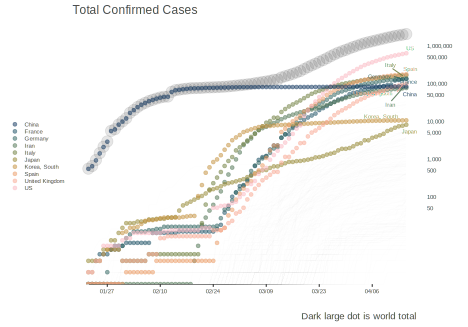
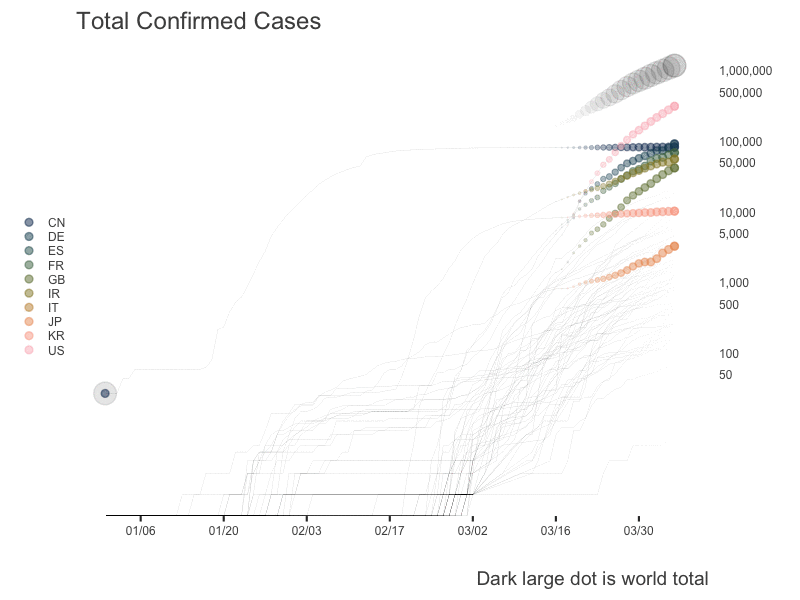
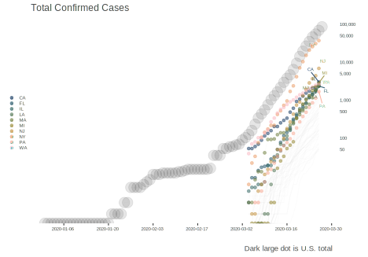
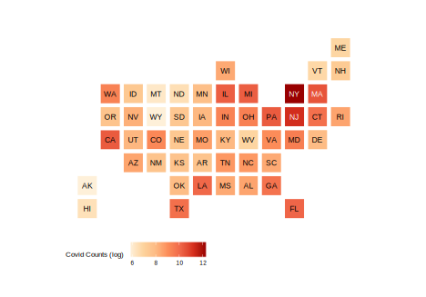
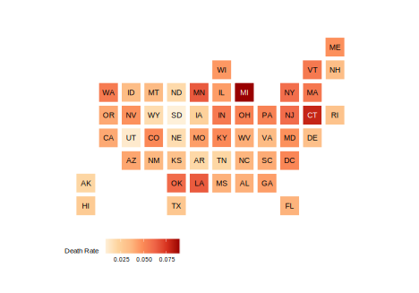
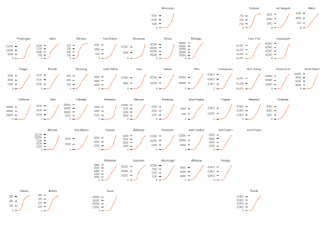
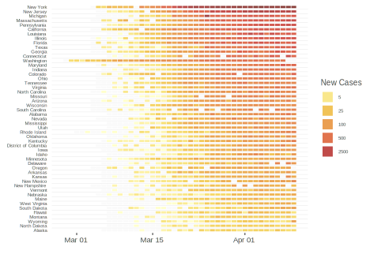

Processing and Visualizing Covid-19 Data
This is some code to get processed data and visualizations regarding the COVID-19 outbreak. The goal here is just to present some code that I’m playing with that may also make it easier for others to get their hands dirty. There are actually already some R packages regarding this, but they are currently (in my opinion) problematic, slow to update, and or don’t really offer much than what you could just do yourself. I’ll likely be updating this daily for the time being.
I actually started scraping Wikipedia’s WHO incidence report tables, but any cursory glance showed numerous issues and lots of cleaning, coupled with a format that changed almost daily. I then started playing with the data behind the Johns Hopkins dashboard, which was notably better, but didn’t have some info and there are issues there as well. I settled on Open Covid, but may revisit JH after their changes take place, as they will also have U.S. county level counts. Unlike JH, Open Covid doesn’t have recovery numbers.
I use some custom functions in the following, and I don’t show every bit of code, but most of these cases are inconsequential. The bulk of this code should be usable by anyone pretty easily if they are familiar with the tidyverse.
Resources:
The following is a fairly simple function for reading data from the GitHub repo. It has arguments for filtering to a specific country, whether or not you only wan the current numbers,
read_covid_data <- function(
country = NULL, # Filter to specific country
current = FALSE, # Only the current data
totals = FALSE # Only totals (no regional)
) {
if (current) {
data = readr::read_csv('https://open-covid-19.github.io/data/data_latest.csv',
col_types = 'Dcccciiddi')
}
else {
data = read_csv('https://open-covid-19.github.io/data/data.csv',
col_types = 'Dcccciiddi')
}
if (!is.null(country)) {
data = filter(data, CountryCode == country | CountryName == country)
}
# other cleanup and additions
data = data %>%
rename(
country_code = CountryCode,
country_name = CountryName,
region_code = RegionCode,
region_name = RegionName,
total_confirmed = Confirmed,
total_deaths = Deaths
) %>%
rename_all(tolower) %>%
group_by(country_code, region_code) %>%
mutate(
total_deaths = ifelse(is.na(total_deaths), 0, total_deaths),
daily_confirmed = total_confirmed - lag(total_confirmed),
daily_deaths = total_deaths - lag(total_deaths),
region_name = if_else(region_name == 'South Caroline', 'South Carolina', region_name),
death_rate = total_deaths/total_confirmed
) %>%
mutate_at(vars(contains('daily')), function(x) ifelse(is.na(x), 0, x)) %>%
select(date:region_name, contains('daily'), contains('total'), death_rate, everything()) %>%
ungroup()
if (totals) data = filter(data, is.na(region_code))
ungroup(data)
}
library(tidyverse) # required for function
main = read_covid_data() # all of the data
world_totals = read_covid_data(current = TRUE, totals = TRUE) # only country current totals
countries = main %>% filter(is.na(region_code)) # country-level for all dates
us = read_covid_data(country = 'US') # all US data
us_current = read_covid_data(country = 'US', current = TRUE) # only current US state totalsNow that we have the data, we can see what’s going on.
| Total Confirmed | Total Deaths | Death Rate | Death Rate (minus Italy) |
|---|---|---|---|
| 475,555 | 21,592 | 4.5% | 3.5% |
| Total Confirmed | Total Deaths | Death Rate |
|---|---|---|
| 69,194 | 1,050 | 1.5% |
| Total Confirmed | Total Deaths | Death Rate |
|---|---|---|
| 2,294 | 43 | 1.9% |
The following uses rvest to grab the current tally for this county from the county website. It is updated daily at noon.
URL = 'https://www.washtenaw.org/3108/Cases'
library(rvest)
init = read_html(URL) %>%
html_table()
washtenaw_cases = as_tibble(init[[1]])| Total Confirmed | Total Deaths | Death Rate |
|---|---|---|
| 92 | 3 | 3.3% |
The following is adapted from the ReadMe file at the open covid repo.
The columns of the main dataset are:
| Name | Description | Example |
|---|---|---|
| date | ISO 8601 date (YYYY-MM-DD) of the datapoint | 2020-03-21 |
| country_code | ISO 3166-1 code of the country | CN |
| country_name | American English name of the country | China |
| region_code | (Optional) ISO 3166-2 code of the region | HB |
| region_name | (Optional) American English name of the region | Hubei |
| total_confirmed | Total number of cases confirmed after positive test | 67800 |
| total_deaths | Total number of deaths from a positive COVID-19 case | 3139 |
| death_rate | Rate of deaths from a positive COVID-19 case | 0.04629794 |
| daily_confirmed | Daily number of cases confirmed after positive test | 0 |
| daily_deaths | Daily number of deaths from a positive COVID-19 case | 6 |
| latitude | Floating point representing the geographic coordinate | 30.9756 |
| longitude | Floating point representing the geographic coordinate | 112.2707 |
| population | Total count of humans living in the region | TODO |
For countries where both country-level and region-level data is available, the entry which has a null value for the region_code and region_name columns indicates country-level aggregation. Please note that, sometimes, the country-level data and the region-level data come from different sources so adding up all region-level values may not equal exactly to the reported country-level value.
The following does some additional processing before going to a plot of the trends. I pick some countries to highlight (not necessarily the ones with the most cases), and I treat the world total as a separate addition to the plot.
highlight = c(
'United States of America',
'China',
'Japan',
'South Korea',
'Italy',
'Iran',
'United Kingdom',
'France',
'Germany',
'Spain'
)
# current days data may not be complete, and some may be updated a day ahead
# relative to the U.S. due to time differences
world = countries %>%
filter(date != Sys.Date() + 1) %>%
group_by(date) %>%
summarise(total_confirmed = sum(total_confirmed))Now we can just do a basic plot. I use ggrepel to see more clearly where the highest cases are currently.
library(ggrepel)
p = countries %>%
ggplot(aes(x = date, y = total_confirmed)) +
geom_path(aes(group = country_code), alpha = .01) +
geom_point(
aes(),
size = 6,
alpha = .1,
data = world
) +
geom_point(
aes(color = country_code),
size = 1.5,
alpha = .5,
data = filter(countries, country_name %in% highlight)
) +
geom_text_repel(
aes(label = country_code, color = country_code),
size = 2,
alpha = .85,
data = filter(countries, country_name %in% highlight, date == max(date)-1),
show.legend = FALSE
) +
scico::scale_color_scico_d(begin = .1, end = .9) +
scale_x_date(
date_breaks = '2 weeks',
labels = function(x) format(x, format = "%m/%d")
) +
scale_y_continuous(
position = "right",
trans = 'log',
breaks = c(50, unlist(map(c(1,5), function(x) x*10^(2:6)))),
labels = scales::comma
) +
visibly::theme_clean() +
labs(
x = '',
y = '',
subtitle = 'Total Confirmed Cases',
caption = 'Dark large dot is world total'
) +
theme(
axis.text.x = element_text(size = 6),
axis.text.y = element_text(size = 6),
axis.title.y = element_text(size = 6),
axis.ticks.y = element_blank(),
legend.title = element_blank(),
legend.key.size = unit(.25, 'cm'),
legend.text = element_text(size = 6),
legend.box.spacing = unit(0, 'mm'),
legend.box.margin = margin(0),
legend.position = 'left',
title = element_text(size = 12)
)
p
The following animates the previous via gganimate.
# be moved to the directory of the post to see
library(gganimate)
p_anim = p +
transition_reveal(date) +
shadow_wake(wake_length = 1/3, falloff = "cubic-in-out")
p_animate = animate(
p_anim,
nframes = 120,
fps = 10,
start_pause = 5,
end_pause = 15,
width = 800,
height = 600,
device = 'png',
res = 144
)
p_animate
The following is similar to the plot shown on the New York Times daily count, just without the unnecessary discretizing of the color (the legend already does that for you). I chose what I thought was a similar palette, but obviously you can play around with that.
# reduce to just the 20 countries with the most cases
top_20 = world_totals %>%
top_n(20, total_confirmed) %>%
arrange(desc(total_confirmed))
# this is to create a ruled effect, not necessary
plot_data = main %>%
filter(is.na(region_code)) %>%
filter(country_name %in% top_20$country_name) %>%
mutate(
country_name = ordered(country_name, levels = rev(top_20$country_name)),
line_positions = as.numeric(country_name) + .5,
line_positions = ifelse(line_positions == max(line_positions), NA, line_positions)
)
plot_data %>%
ggplot(aes(x = date, y = country_name)) +
geom_tile(
aes(
fill = daily_confirmed,
width = .9,
height = 0.5
),
na.rm = T,
size = 2
) +
geom_hline(
aes(yintercept = line_positions),
color = 'gray92',
size = .25
) +
scico::scale_fill_scico(
end = .75,
na.value = 'gray98',
palette = 'lajolla',
trans = 'log',
breaks = c(5, 25, 100, 500, 2500)
) +
labs(x = '', y = '') +
guides(fill = guide_legend(title = 'New Cases')) +
visibly::theme_clean() +
theme(
axis.ticks.y = element_blank(),
legend.text = element_text(size = 6),
legend.title = element_text(size = 10)
)
The following shows the percentage increase in cases over the previous day (capped at 100 or greater). Early on this isn’t very useful (e.g. going from 5 to 10 is a 100% increase). We can see that China and South Korea have minimal to no increase day to day at present, while other countries are continuing to see relatively large increases.
plot_data = main %>%
filter(is.na(region_code)) %>%
filter(country_name %in% top_20$country_name) %>%
group_by(country_code) %>%
mutate(
daily_perc = 100 * (total_confirmed / lag(total_confirmed) - 1),
daily_perc = ifelse(daily_perc > 100, 100, daily_perc)
) %>%
ungroup() %>%
mutate(
country_name = ordered(country_name, levels = rev(top_20$country_name)),
line_positions = as.numeric(country_name) + .5,
line_positions = ifelse(line_positions == max(line_positions), NA, line_positions)
)
plot_data %>%
ggplot(aes(x = date, y = country_name)) +
geom_tile(
aes(
fill = daily_perc,
width = .9,
height = 0.5
),
na.rm = T,
size = 2
) +
geom_hline(
aes(yintercept = line_positions),
color = 'gray92',
size = .25
) +
scico::scale_fill_scico(
end = .75,
na.value = 'gray98',
palette = 'lajolla',
# trans = 'log',
# breaks = c(seq(0, 100, 10))
) +
labs(x = '', y = '') +
guides(fill = guide_legend(title = '% New Cases')) +
visibly::theme_clean() +
theme(
axis.ticks.y = element_blank(),
legend.text = element_text(size = 6),
legend.title = element_text(size = 10)
)
We can visualize the state level data in numerous ways. Here is the world trend plot previously seen, now applied just to the U.S.
highlight = us_current %>%
filter(!is.na(region_code)) %>%
top_n(10, total_confirmed) %>%
pull(region_name)
p = us %>%
ggplot(aes(x = date, y = total_confirmed)) +
geom_path(aes(group = region_code), alpha = .01) +
geom_point(
aes(),
size = 6,
alpha = .1,
data = filter(us, is.na(region_code))
) +
geom_point(
aes(color = region_code),
size = 1.5,
alpha = .5,
data = filter(us, region_name %in% highlight)
) +
geom_text_repel(
aes(label = region_code, color = region_code),
size = 2,
alpha = .85,
data = filter(us, region_name %in% highlight, date == max(date))
) +
scico::scale_color_scico_d(begin = .1, end = .9) +
scale_x_date(date_breaks = '2 weeks') +
scale_y_continuous(
position = "right",
trans = 'log',
breaks = c(50, unlist(map(c(1,5), function(x) x*10^(2:6)))),
labels = scales::comma
) +
visibly::theme_clean() +
labs(
x = '',
y = '',
subtitle = 'Total Confirmed Cases',
caption = 'Dark large dot is U.S. total'
) +
theme(
axis.text.x = element_text(size = 6),
axis.text.y = element_text(size = 6),
axis.title.y = element_text(size = 6),
axis.ticks.y = element_blank(),
legend.title = element_blank(),
legend.key.size = unit(.25, 'cm'),
legend.text = element_text(size = 6),
legend.box.spacing = unit(0, 'mm'),
legend.box.margin = margin(0),
legend.position = 'left',
title = element_text(size = 12)
)
p
Here we look at counts and death rates via a ‘binned’ map. There are numerous issues with trying to depict numeric information on a map. This at least tries to solve the issue of state size by making them all equal while retaining the basic shape of the U.S.
library(statebins)
us_current %>%
filter(region_code != 'DC') %>%
statebins(
state_col = 'region_name',
value_col = "log(total_confirmed)",
palette = "OrRd",
direction = 1,
name = "Covid Counts (log)"
) +
theme_statebins(base_size = 8)
us_current %>%
filter(!is.na(region_name)) %>%
statebins(
state_col = 'region_name',
value_col = "death_rate",
palette = "OrRd",
direction = 1,
name = "Death Rate"
) +
theme_statebins(base_size = 8)
We can plot trends in a map-like fashion too, and the following uses the geofacet package. As of late March, this is one of the scarier graphics, with no flattening in sight.
library(geofacet)
us %>%
filter(total_confirmed != 0, region_code != 'DC') %>%
ggplot(aes(date, total_confirmed, group = region_code)) +
geom_path(color = '#ff550080') +
labs(y = '', x = '') +
facet_geo(~region_code, scales = 'free') +
visibly::theme_clean() +
theme(
axis.text.x = element_blank(),
axis.ticks.x = element_blank(),
axis.text.y = element_text(size = 4),
strip.text = element_text(size = 4),
)
We can do the daily counts as before.
levs = us_current %>%
filter(!is.na(region_name)) %>%
arrange(total_confirmed) %>%
pull(region_name)
plot_data = us %>%
filter(!is.na(region_code)) %>%
mutate(
region_name = ordered(region_name, levels = levs),
line_positions = as.numeric(region_name) + .5,
line_positions = ifelse(line_positions == max(line_positions), NA, line_positions)
)
plot_data %>%
ggplot(aes(x = date, y = region_name)) +
geom_tile(
aes(
fill = daily_confirmed,
width = .9,
height = 0.5
),
na.rm = T,
size = 2
) +
geom_hline(
aes(yintercept = line_positions),
color = 'gray92',
size = .25
) +
scico::scale_fill_scico(
end = .75,
na.value = 'gray98',
palette = 'lajolla',
trans = 'log',
breaks = c(5, 25, 100, 500, 2500)
) +
labs(x = '', y = '') +
guides(fill = guide_legend(title = 'New Cases')) +
visibly::theme_clean() +
theme(
axis.text.y = element_text(size = 6),
axis.ticks.y = element_blank(),
legend.text = element_text(size = 6),
legend.title = element_text(size = 10)
)
If you see mistakes or want to suggest changes, please create an issue on the source repository.
Text and figures are licensed under Creative Commons Attribution CC BY-SA 4.0. Source code is available at https://github.com//m-clark/m-clark.github.io, unless otherwise noted. The figures that have been reused from other sources don't fall under this license and can be recognized by a note in their caption: "Figure from ...".
For attribution, please cite this work as
Clark (2020, March 26). Michael Clark: Exploring the Pandemic. Retrieved from https://m-clark.github.io/posts/2020-03-23-covid/
BibTeX citation
@misc{clark2020exploring,
author = {Clark, Michael},
title = {Michael Clark: Exploring the Pandemic},
url = {https://m-clark.github.io/posts/2020-03-23-covid/},
year = {2020}
}